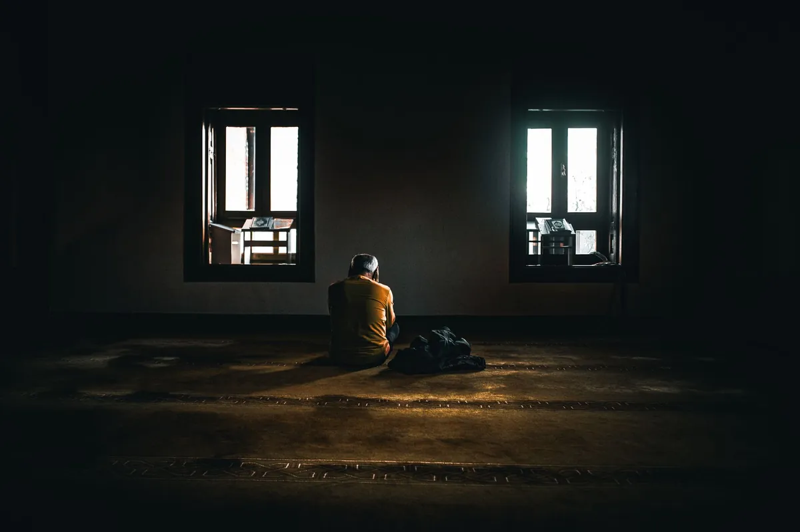

Biohacking Your Sleep: Cutting-Edge Strategies for Deeper Rest & Optimal Health

Key takeaways
- I used to think I was a champion of the sleepless.
- My nights were a battlefield of tossing, turning, and staring at the ceiling, convinced that a few hours of restless sleep was just my lot in life.
- Track what feels sustainable and adjust gradually.
I used to think I was a champion of the sleepless. My nights were a battlefield of tossing, turning, and staring at the ceiling, convinced that a few hours of restless sleep was just my lot in life. I'd chug coffee like it was going out of style, desperately trying to power through days that felt like wading through mud. Sound familiar? If you're like me, constantly battling fatigue and looking for ways to truly recharge, then biohacking your sleep might be the game-changer you need. It's not about perfection; it's about smart, science-backed tweaks to unlock your body's natural ability to get deep, restorative sleep. We're diving into the cutting-edge strategies for deeper rest and optimal health.
For years, I just accepted it. I'd tell myself, "Some people just don't need much sleep." But the reality was, my brain fog was getting thicker, my patience was thinner, and my overall well-being was taking a nosedive. It wasn't until I started exploring the world of biohacking that I realized sleep wasn't a passive activity I just endured; it was an active, crucial pillar of health that I could actually improve. Biohacking Your Sleep: Cutting-Edge Strategies for Deeper Rest & Optimal Health isn't just a catchy phrase; it's a pathway to reclaiming your energy and vitality.
One of the most surprising breakthroughs for me was understanding the profound impact of light. We're bombarded by artificial light, especially blue light from our screens, which tricks our brains into thinking it's still daytime. This messes with our melatonin production, the hormone that signals sleep. I started wearing blue-light-blocking glasses a couple of hours before bed, and the difference was noticeable within days. It felt like I was gently nudging my body towards its natural sleep cycle, rather than fighting it.
The 2-Minute Win
Right now, grab your phone or computer. Go into your settings and enable the "Night Shift" or "Blue Light Filter" option. Set it to turn on automatically from sunset. It’s a simple step that can make a big difference.
Then there's temperature. Our body temperature naturally drops as we prepare for sleep. Creating a cooler sleep environment can significantly enhance sleep quality. I invested in a cooling mattress pad, and while it might sound fancy, it's been a revelation. Even just ensuring my bedroom is consistently between 60-67 degrees Fahrenheit makes a huge difference. Don't underestimate the power of a cool room for deeper rest.
Wearable tech has also become a huge part of my sleep biohacking journey. Devices like Oura rings or Whoop bands track my sleep stages (light, deep, REM), heart rate variability (HRV), and resting heart rate. Seeing the data helped me connect my daily habits to my sleep quality. For instance, I noticed my HRV would dip after a late-night, high-stress work call, directly impacting my deep sleep. This kind of insight is invaluable for making informed adjustments. It's like having a personal sleep coach on your wrist, guiding you towards better sleep.
Mindful practices are also key. I’ve incorporated a short, guided meditation using an app before bed. It helps quiet the mental chatter that often keeps me awake. Even just 5-10 minutes of deep breathing exercises can signal to your nervous system that it's time to wind down. It’s about creating a ritual that tells your body and mind it's safe to let go and rest. This is a crucial part of any related healthy tip. You can find more about this in a related healthy tip.
For those struggling with sleep, I've found that incorporating a small amount of magnesium before bed can be surprisingly effective. Magnesium glycinate, in particular, is known for its calming effects and is less likely to cause digestive upset. It helps regulate neurotransmitters that are important for sleep. Remember to talk to your doctor before starting any new supplement, of course. It’s a simple addition to your routine that can yield significant results. For a more comprehensive approach, check out this another practical guide.
One insider secret I learned is that a brief exposure to natural sunlight within the first hour of waking can significantly anchor your circadian rhythm, making it easier to fall asleep later. Even on a cloudy day, stepping outside for 10-15 minutes makes a difference.
Consistency is king. Trying to implement all these changes at once can be overwhelming. I learned this the hard way! Instead, focus on one or two strategies at a time. Maybe start with the blue light glasses and a cooler room. Once those feel like second nature, introduce another element. This approach helps you build sustainable habits and avoid burnout. It's about making progress, not achieving overnight perfection. This is key to helping you stay consistent with this.
The journey to better sleep is personal. What works wonders for one person might not be as effective for another. Experimentation is part of the biohacking process. Pay attention to how your body responds. Are you feeling more rested? Is your energy more stable throughout the day? These are the real indicators of success. Don't be afraid to tweak things until you find your sweet spot. This is a similar wellness insight to what we've discussed. You can find more on this by visiting our explore more sleep guides.
Educational only — not medical advice.
Disclosure: This page may contain affiliate links.
Recommended Reading
- Unlock Better Sleep: Quality Sleep Strategies for Optimal Health & Energy
- Unlock Your Best Sleep: Daily Habits for More Energy & Focus
- Biohacking Your Sleep: Science-Backed Strategies for Deeper Rest
More in sleep
 sleep
sleepMelatonin Side Effects: Is Your Sleep Supplement Harming Your Heart?
Worried about melatonin side effects? A recent study links long-term melatonin use to a higher risk of heart failure. Di
Read article → sleep
sleepBiohacking Your Sleep: Science-Backed Strategies for Deeper Rest
Discover practical biohacking strategies for deeper rest. Learn about light therapy, temperature control, and supplement
Read article →Related posts
sleepMelatonin Side Effects: Is Your Sleep Supplement Harming Your Heart?
Worried about melatonin side effects? A recent study links long-term melatonin use to a higher risk of heart failure. Di
Read article →sleepBiohacking Your Sleep: Science-Backed Strategies for Deeper Rest
Discover practical biohacking strategies for deeper rest. Learn about light therapy, temperature control, and supplement
Read article → sleep
sleepUnlock Your Best Sleep: Energy & Focus Hacks for Americans
Struggling to unlock your best sleep? Discover science-backed energy & focus hacks for Americans. Boost daytime energy a
Read article →